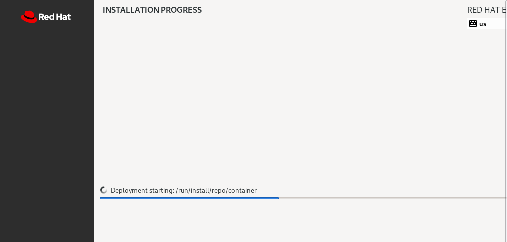

Use Case - Building a RHEL ISO image using bootc-image-builder
In this example, we will build a container image from a Containerfile and we will generate a ISO image to spin up a Virtual Machine in KVM and install RHEL from the container image.
The Containerfile in the example:
- Updates packages
- Installs tmux and mkpasswd to create a simple user password
- Creates a bootc-user user in the image
- Adds the wheel group to sudoers
- Installs Apache Server
- Enables the systemd unit for httpd
- Adds a custom index.html
Review Containerfile.iso
LABEL org.opencontainers.image.authors="alerossi@redhat.com"
FROM registry.redhat.io/rhel10/rhel-bootc:10.1
RUN dnf -y install tmux mkpasswd
RUN echo "%wheel ALL=(ALL) NOPASSWD: ALL" > /etc/sudoers.d/wheel-sudo
RUN dnf -y install httpd && \
systemctl enable httpd && \
mv /var/www /usr/share/www && \
sed -ie 's,/var/www,/usr/share/www,' /etc/httpd/conf/httpd.conf
RUN echo "Welcome to the bootc-http instance!" > /usr/share/www/html/index.html
EXPOSE 80
Building the image
From the root folder of the repository, switch to the use case directory:
To build the image:
Testing the image
You can now test it using:
Note: The "-p 8080:80" part forwards the container's http port to the port 8080 on the host to test that it is working.
The container will now start and a login prompt will appear.
On another terminal tab or in your browser, you can verify that the httpd server is working and serving traffic.
Terminal
Browser

Stop the httpd server from the second container using podman.
Tagging and pushing the image
To tag and push the image you can simply run (replace YOURQUAYUSERNAME with the account name):
Log-in to Quay.io:
And push the image:
Customize the image
In this example, we will not create the user in the image, but we will provide a customization using the config.toml file. It can be used to perform customizations of users, groups, etc.
A sample config.toml is already present in the use case directory, that we will use to create our VM. As this is an install ISO, we use kickstart to create the VM as well as the bootc-user/redhat and add it to the wheel group is as follows:
[customizations.installer.kickstart]
contents = """
# Basic setup
network --bootproto=dhcp --device=link --activate
# Basic partitioning
clearpart --all --initlabel --disklabel=gpt
reqpart --add-boot
part / --grow --fstype xfs
# No ostreecontainer command needed, instead we lay down the container contents with BIB in the ISO
firewall --disabled
services --enabled=sshd
# mkpasswd --method=SHA-512 --rounds=4096 redhat
user --name=bootc-user --groups=wheel --iscrypted --password=$6$rounds=4096$1VjdHWc6vFCglSh9$3HcKRPO8i2ias09AJ9y6FhQu4V/es/evh6/GJtTtduV.K6AExr.eQb/Ava8v0fZhHKTtoFniEGR2nKO.fCear1
# Only inject a SSH key for root
rootpw --iscrypted locked
reboot
"""
Generating the ISO image
To generate the ISO image we will be using bootc-image-builder container image that will help us transitioning from our newly generated bootable container image to a ISO file that can be used with KVM or bare metal to install the OS.
The bootc-image-builder container will need rootful access to run and a local copy of the image in system storage. You can pull the image using root credentials from quay.io to accomplish this. If the repository isn't public, you will need to log into quay.io again. You can control visibility of the repository under Repository Settings in the quay.io interface.
Using podman image scp
You can use podman to copy images between remote hosts using
SCP with the image subcommand. This will also work for local
storage on Linux without using SSHd. For example, to copy the
locally built image to system storage without pulling from the quay.io:
Once the image has been made available, proceed with the ISO image creation:
sudo podman run \
--rm \
--privileged \
--security-opt label=type:unconfined_t \
-v $(pwd)/output:/output \
-v $(pwd)/config.toml:/config.toml \
-v /var/lib/containers/storage:/var/lib/containers/storage \
registry.redhat.io/rhel10/bootc-image-builder:latest \
--type iso \
quay.io/$QUAY_USER/rhel-bootc-vm:iso
We will use the image we built to create our ISO in the output folder.
The process will take care of all required steps (deploying the image, SELinux configuration, filesystem configuration, ostree configuration, etc.), after a couple of minutes we will find in the output:
Generating manifest manifest-iso.json
DONE
Building manifest-iso.json
starting -Pipeline source org.osbuild.containers-storage: f1027594ecbee0b434f86af01d4ba21b478265c0c773e35c387858d0fc4bf16d
Build
root: <host>
Pipeline source org.osbuild.curl: 07337b98b3c859adfb37b011d83cf0511884147bf999e7869ffbf9074b529a4f
Build
root: <host>
[...]
⏱ Duration: 9s
org.osbuild.implantisomd5: 3798a4bfccd982e2e24d6130c4174eba98ad12f94a41b25ec8884a8cfccaf8ce {
"filename": "install.iso"
}
['implantisomd5', '/run/osbuild/tree/install.iso']
Inserting md5sum into iso image...
md5 = 66adac8cb9127c31942085bade81a8d4
Inserting fragment md5sums into iso image...
fragmd5 = 9d5d936a1b5c8f9bf96e1e14c164898d8e2fcf45652dbee6f3741e17b5ca
frags = 20
Setting supported flag to 0
⏱ Duration: 6s
manifest - finished successfully
build: 9133fb8610ab053dae7e281e6a6655dbb912c4530d32e4da75c06b8713a87c80
anaconda-tree: fcd61d1236a42900977530f12f45fe452f2f0c8bf3c80a7ba60cb45ffe4bf36d
rootfs-image: 0a517e05ab42f947beec8dae4d2da338ca9cc7fe17b1daba013e24b1c60aeadf
efiboot-tree: 61a20c820b40436ce7bd6d1a74c6b97a05f7c8800b678083942e814cf9f7cc0e
bootiso-tree: fd0185a1c0eb53df152acd85195c016315e79dd5dc32eb32d07abf0e21251c62
bootiso: 3798a4bfccd982e2e24d6130c4174eba98ad12f94a41b25ec8884a8cfccaf8ce
Build complete!
Results saved in
Verify that under the output/bootiso folder we have our image ready to be used.
Create the VM in KVM
We will now use the image to spin up our Virtual Machine in KVM. Copy the ISO to a KVM storage pool on the system. We'll use a standard libvirt location, boot but if you have another storage pool configured you can use that as well.
sudo virt-install \
--name rhel-bootc-vm \
--vcpus 4 \
--memory 4096 \
--cdrom /var/lib/libvirt/boot/install.iso \
--os-variant rhel10-unknown \
--disk size=20 \
--network network=default
We can check that the installer is running using the VM Console:

You can log into the graphical console directly, or log in via SSH in another shell. Wait for the VM to be ready and retrieve the IP address for the domain to log-in using SSH using bootc-user/redhat credentials: